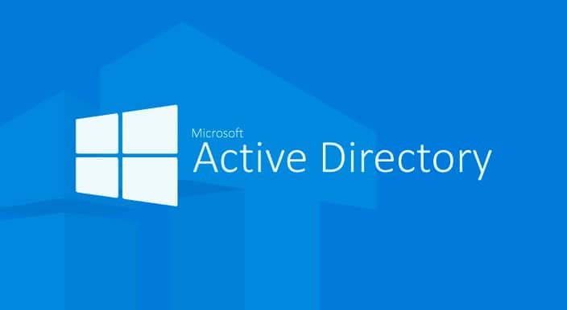
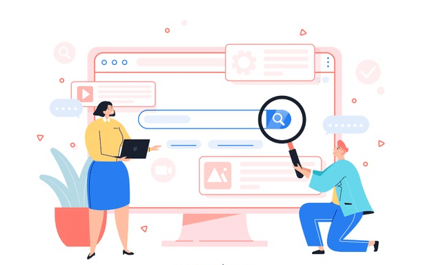
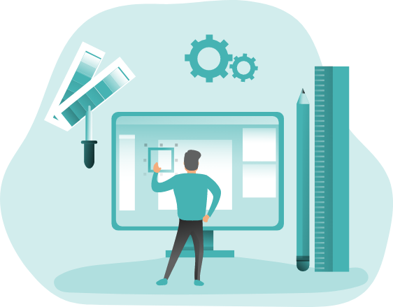

L'active Directory

Active Directory est un service d'annuaire utilisé pour stocker des informations relatives aux ressources réseau sur un domaine.
Il regroupe :
- Les ressources (poste de travail, imprimante, scanner, dossiers partagés, etc.)
- Les utilisateurs (comptes individuels et groupes, c'est-à-dire des listes d'utilisateurs avec leurs droits et leurs services)
- Les services (courrier électronique,...).
PROJET ELLA CORPORATION

Missions et objectifs
1. Création d'une infrastructure avec les services Windows
2. Sécuriser l'infrastruture
3. Rédaction de documents d'installation
4. Rédaction de documents de test

1. Création et installation d'un serveurs windows server 2019
2. Création et installation d'un routeur virtuel (pfsense)
3. Création d'un AD DS, DHCP, DNS, IIS, WDS, GPO, WSUS
4. Création d'utilisateur sécurisé grâce au LDAP
5. Installation d'un deuxième windows serveur 2019 en redondance
6. Réalisation de documentations technique,test et d'une topologie réseau
Etapes du projet
1. Création et installation d'un serveurs windows server 2019
2. Création et installation d'un routeur virtuel (pfsense)
3. Création d'un AD DS, DHCP, DNS, IIS, WDS, GPO, WSUS
4. Création d'utilisateur sécurisé grâce au LDAP
5. Installation d'un deuxième windows serveur 2019 en redondance
6. Réalisation de documentations technique,test et d'une topologie réseau
{kind=link}
Bilan du projet
Ce projet m'a permis de :
1. Travailler en total autonomie
2. Utiliser et mettre en avant ma veille technologique
3. Monter en compétence